DOT Anchors and Composition
This guide explains how independently authored Dynamic Open Trust (DOT)
components participate in composition by referring to authoritative Contracts
rather than duplicating contract-defined facts. It distinguishes the stable
DOT Anchor model from the stable, versioned dotx compose format and
follows the complete path from a logical capability to a deployed connection.
For a technology-neutral consumer boundary, see integration handoff.
Read this first
|
Keep these three boundaries intact:
If a value changes between installations—for example a host, URL, port, credential, realm, broker, namespace, or device—it does not belong in an Anchor. |
| If you want to… | Start with |
|---|---|
Publish a composable DOT |
Authoring two composable DOTs, then Contract-backed Anchors and deployment binding. |
Connect existing DOTs |
Composition documents and DOT instances, direct request/response wires, and materializers. |
Model messaging through a broker |
|
Handle authentication or secrets |
|
Operate a composition |
|
Design a new 6G integration type |
Anchor boundaries, extension points, and 6G security composition patterns. |
Release status and supported profile
The DOT-owned Anchor model, contract selectors, service-port bindings,
validation, generated schema, repository resolution, and conformance fixtures are
release candidates. The separate composition document and its local lifecycle
executor implement the stable dot.mare6g.eu/v1 profile.
The current executable profile supports:
-
local DOT sources pinned by UUID and version, and local Contract payloads pinned by UUID, in the composition;
-
OpenAPI, AsyncAPI, Protobuf, and GraphQL contract selectors;
-
contractless protocol/media declarations when no supported contract exists;
-
named deployment selection and service-port bindings;
-
explicit environment-variable and config-file materializers;
-
explicit externally owned gateway bindings for cross-platform wires, with ownership and no-cleanup semantics recorded in plan, lock, and state;
-
Docker Image composition networking and per-instance identity;
-
Kubernetes and Helm deployment/readiness through the existing single-DOT lifecycle;
-
reference-only process-environment and Kubernetes Secret inputs;
-
rollback, private local state, resumable partial apply, status, and reverse-order destroy;
-
contract-authorized active probes for safe OpenAPI operations, GraphQL query/mutation/SSE lifecycles, finite side-effect-free unary/client/server/ bidirectional gRPC calls, and correlated AsyncAPI MQTT/NATS/Kafka/AMQP delivery within one Docker network or Kubernetes namespace; and
-
fail-closed handling of ambiguity, unknown compatibility, unsupported privilege grants, and unreachable cross-platform materialization.
The authoritative machine-readable boundary is
DOT-Testing/acceptance/composition/v1/profile.json. Run
task testing:compose:acceptance to compare the installed CLI help and emitted
schema with that profile, verify every committed lock, exercise all twenty-one
cross-standard wires and six runtime dry-run adapters, and emit revision-pinned,
secret-free JSON evidence.
It is not a general multi-host production orchestrator. Shared state, composition-owned cross-platform gateways or tunnels, external secret-store plugins, multi-scheme authentication, unsafe or unbounded gRPC, AsyncAPI event protocols other than MQTT, NATS, Kafka, and AMQP 0-9-1, AMQPS/AMQP 1.0, and cross-platform probe adapters remain outside this profile. Safe anonymous OpenAPI probes, single-scheme OAuth 2.0 client-credentials probes, GraphQL query/mutation/SSE probes, all four finite side-effect-free gRPC shapes, and AsyncAPI MQTT/NATS/Kafka/AMQP delivery probes within a shared Docker network or Kubernetes namespace are supported.
Single-DOT live lifecycle evidence for a runtime adapter is not automatically multi-DOT composition acceptance. The profile records validation, planning, dry-run, single-DOT live lifecycle, and composition live lifecycle separately for each adapter.
The five distinct objects
| Object | Owner | Responsibility |
|---|---|---|
Contract |
DOT author |
Authoritative operation, message, payload, protocol, and security description in OpenAPI, AsyncAPI, Protobuf, or GraphQL. |
Anchor |
DOT author |
Stable UUID and composition role selecting one contract element, or declaring explicit communication facts when no contract exists. |
Anchor binding |
DOT author |
Maps one Anchor UUID to a named port of a deployment service. It does not contain a live address. |
Wire |
Composer/operator |
Connects one named DOT instance and Anchor UUID to another. It may select a provider, consumer, or broker service-port endpoint. |
Materializer |
Composer/operator |
Explicitly writes a resolved connection value into configuration declared by a participating service. |
Where each fact lives
| Fact | Source of truth | Referenced by |
|---|---|---|
API operation, message, schemas, protocol, media type, security requirement |
Contract payload |
|
Logical composition point and provider/consumer role |
|
Wire |
Service and named port implementing an Anchor |
|
Resolved plan endpoint |
Configuration the service permits a deployer to supply |
|
Deployment input or materializer target |
Selected DOT version, topology, readiness, parameter values, and secret references |
Composition document |
|
Concrete runtime address and port |
Explicit composition network binding or resolved deployment plan |
Materializer or exposed-Anchor forwarding |
Live reachability, authentication result, and policy decision |
Runtime probe or external policy system |
Operational evidence; never persisted as an Anchor fact |
The ownership chain is:

These objects must not collapse into one schema. In particular, a wire is not part of either DOT, and a live URL is not part of an Anchor.
Resolution pipeline

This resembles compilation: validate the independently authored inputs, link stable references, produce a deterministic deployment plan, and only then mutate runtime state. A failure at one phase is not evidence that a later phase was attempted.
Continue through the workflow
The detailed guide is organized around the work being performed:
| Task | Guide |
|---|---|
Publish stable composition points in a DOT |
|
Define pinned DOT instances and composition topology |
|
Connect endpoints, provide security inputs, and materialize configuration |
|
Validate, plan, apply, inspect, and evolve a composition |
Readers implementing a separate composer should also consult the integration handoff.